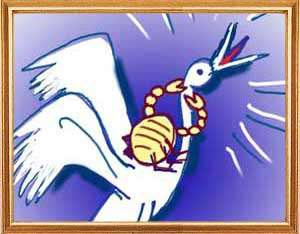
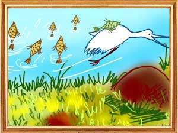
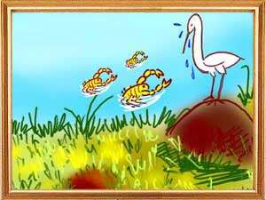

Once upon a time an old crane lived on the rim of a large lake in the middle of a jungle. Because of age, it was not able to prey on fish and other insects. Unable to suffer hunger, the crane stood on the edge of the lake and began crying pitiably. Moved at the sight, a crab passing by asked the crane: “Friend, what is the matter? Why are you not hunting for food today?”
“Son, you have correctly guessed. I am feeling guilty because I have swallowed too many fish. I have decided to fast unto death and am not harming even the fish that are within my reach,” said the crane. “But why are you so philosophical today,” asked the crab. “What shall I tell you? I have heard that there will be no rains for the coming twelve years. Astrologers have forecast an evil conjunction of the planets. As a result, there won't be rains on this earth for another twelve years. All these years we have all played and lived together. I am now worried about the fate waiting for these poor fish and other creatures in the lake. They will die and I will be alone and without them.”
“Is there no way we can save ourselves?” “At present, fish and other water creatures in other lakes are migrating to bigger lakes with the help of their relatives. Here, nobody seems to worry about the dark future. At this rate, there won't be any kind of fish left.”
The crab carried this information to all the fish and other water creatures in the lake. Alarmed, all of them came to the crane and pleaded with him to show them the way to overcome this danger. “Why not. There is a big lake not far from here that has plenty of water throughout the year and lotuses always in bloom. That lake does not go dry even if there are no rains for twenty-four years. I can ferry all of you one by one to that lake.” The Crafty Crane And The Craftier Crab The poor fish and other water creatures at once put all the trust in the crane and agreed to be ferried. Every day, the crane would take one of them at a time to a lonely place, smash them against a stone and eat them. He would return to the lake and repeat the trick every day.
One day the crab asked the crane, “Uncle, you are taking everyone to the faraway lake and not me. Why don't you take me there today and save my life?” Tired with eating fish every day, the crane too was happy to carry the crab to the lake that did not exist. The crab was happy and mounted on the back of the crane. As the crane was flying close to the spot where he ate all the fish, the crab saw a heap of fish bones and asked the crane, “Uncle, we have come a long distance and I see no lake anywhere. Tell me, where is the lake?”
“You are a fool to trust me. There is no lake. Nor is there water. Say your prayers now; I am going to kill you.” The crafty crab at once caught the neck of the crane in his claws and tore through it to death. Slowly, carrying the crane's neck, the crab reached the lake where all his friends, worried that the crane did not come back, asked him what made him come back. The Loss of Friends - The Crafty Crane And The Craftier Crab The crab said, “you fools, that crane was taking all of us to a lonely place where it would smash the victims against a rock and have them for lunch. I found out his mischief and saved myself by slicing his neck. From today, all of us can live happily without fear.”
Then the crows asked the jackal how they could get rid of the cobra that was feasting on their offspring. The jackal told them to go to a big city and snatch any item of jewellery from a palace and drop it in the hollow of the tree that is the cobra's home. In search of the jewellery, the king's men would reach the tree and kill the cobra.
The crow couple flew off to a lake where the women in the king's harem were revealing in water. Before entering water, the women left their jewellery and clothes on the waterside. The female crow skillfully dived and snatched a gold necklace and began slowly flying towards the cobra's hideout. The king's men who saw the crow fly off with the necklace followed the female crow and saw it dropping the necklace into the hollow of the tree. They ran to the tree and pulling it out killed the cobra.